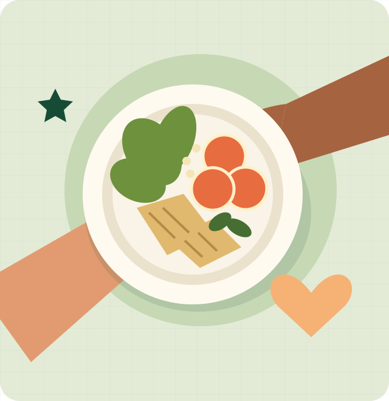
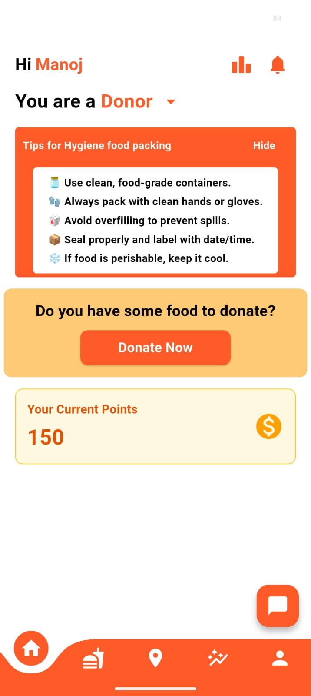
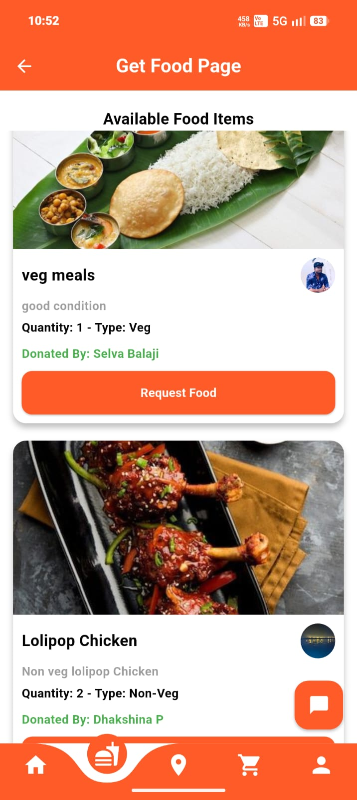
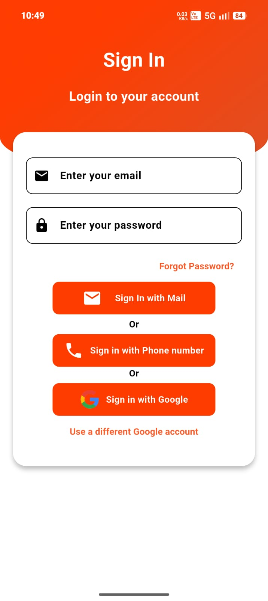

Share food
A donor lists surplus food with details such as quantity, type, and collection information.
GOOD FOOD. SHARED POSSIBILITIES.
A simpler way to share surplus food, discover local opportunities, and bring communities a little closer.
A community-first food-sharing initiative.
Early-stage project. Built around a shared purpose.

01 / THE OPPORTUNITY
Sometimes, what’s missing isn’t food.
It’s a way to find each other.
Edible food can go unused while nearby sharing opportunities remain hard to discover. A simple way to connect could help communities make better use of what’s already available.
02 / A SIMPLE IDEA
The intended sharing journey.
Designed to be simple, human, and local.
A donor lists surplus food with details such as quantity, type, and collection information.
People browse listings to find food-sharing opportunities relevant to their area.
An interested recipient requests food and coordinates collection with the donor.
Product concept: completion and live operation of these workflows have not been verified.
03 / THOUGHTFULLY CONNECTED
The intended building blocks of Share-Meal.
Transparent about where the project stands.
Browse the idea of surplus food, clearly presented with useful details.
Find opportunities relevant to a local area.
Express interest and coordinate a collection with a donor.
Different journeys, with one shared purpose.
Explore ways for volunteers to support local sharing.
A sign-in interface for the intended application.
Explore nearby opportunities through a location view.
These are intended capabilities, not a promise of a live service.
04 / OUR MISSION
We believe food can bring communities closer together. Share-Meal is exploring how accessible technology can help people share surplus food, discover local opportunities, and make better use of available resources.
Help shape what comes next ↗05 / A PLACE FOR YOU
Turn surplus into an opportunity to connect. Designed for people with edible food to share.
Discover potential local opportunities and communicate about collecting shared food.
Help shape a more accessible sharing experience through future coordination and support.
06 / A LOOK INSIDE
Supplied app screens offer a glimpse of the prototype.
Images demonstrate interfaces, not verified live services.



No request is submitted from this preview.
07 / THE PROJECT STORY
What if sharing good food with someone nearby were a little easier?
That question is at the heart of Share-Meal. The project brings food discovery, clear information, and community coordination into one product idea. It is still early: the supplied screens show the direction, while implementation and public availability need verification.
The longer-term vision is approachable technology that makes local food sharing easier to understand and access. The next step is to learn, refine, and build responsibly with the community in mind.
08 / A FEW USEFUL ANSWERS
A clear view of the project today.
Share-Meal is an early-stage project exploring how technology can help communities share surplus food and discover local opportunities.
The intended journey is to list surplus food, discover relevant listings, and request food before coordinating collection. These workflows have not been independently verified.
The project is designed with food donors, recipients, and community volunteers in mind. Participation rules and service areas will need to be confirmed before a public launch.
A public launch has not been verified. This website introduces the project; it does not accept food listings, requests, or account registrations.
Company or charitable registration has not been verified. Share-Meal is presented here as a project, without a claim of incorporation or nonprofit status.
Explore the linked GitHub repository to understand the project and any published contribution guidance. Development, design, accessibility, and documentation are useful starting points.
LET’S BUILD SOMETHING MEANINGFUL
Interested in development, volunteering, or future collaboration?
Explore the project and help shape its next chapter.
Project enquiries start with the repository.
A contact email has not yet been provided.